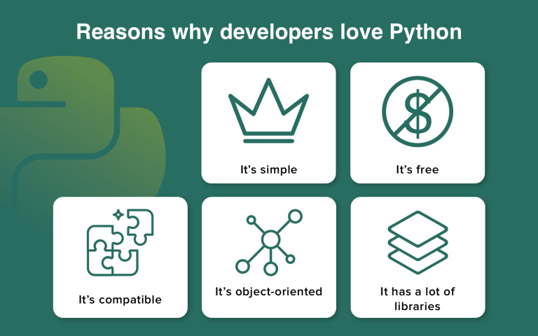
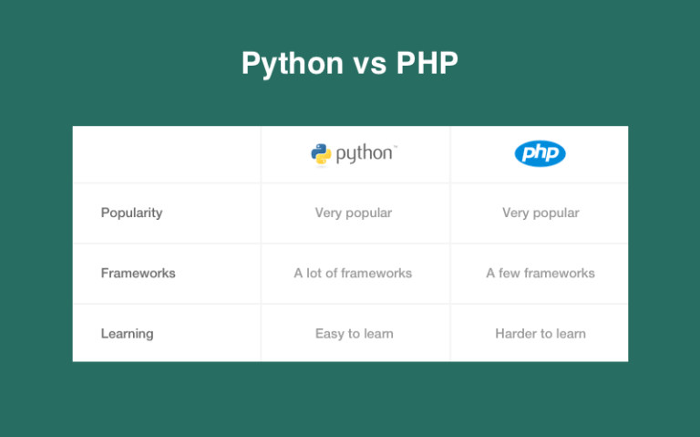
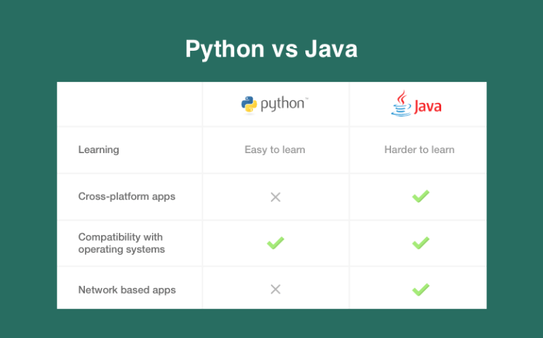
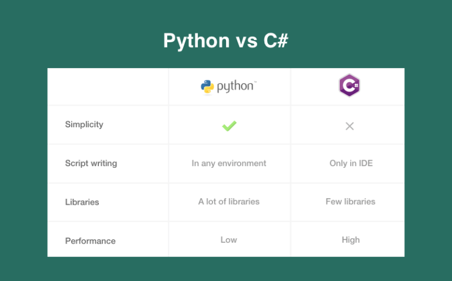
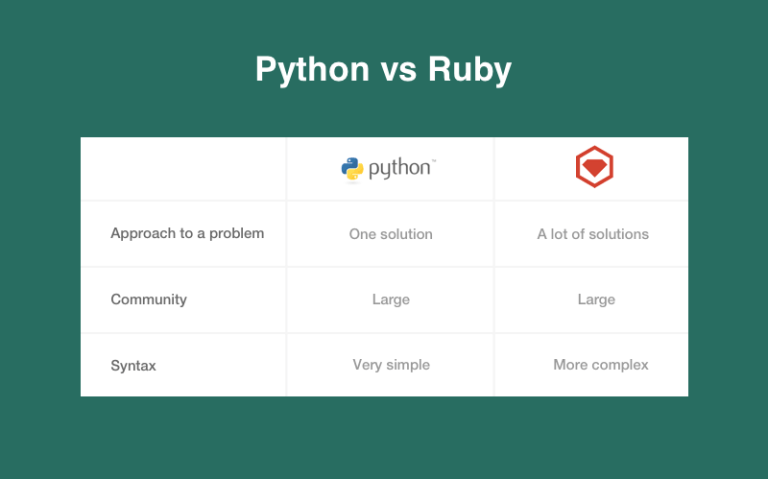

(Sponsors) Get started learning Python with DataCamp's free Intro to Python tutorial. Learn Data Science by completing interactive coding challenges and watching videos by expert instructors. Start Now!
Reasons to Use Python Over Other Programming Languages
Updated on Jan 07, 2020
The modern IT market provides various programming languages like C#, Java, Python, and more. As a result, it’s necessary to choose the technology to study. Python has become quite widespread these days. According to the latest research, Python ranked as number one of the top programming languages of 2019.
So, we’ve decided to compare Python with other popular programming languages and reveal its benefits.
Python’s Advantages #
Let’s start with the basics. Python was created approximately 40 years ago. Since then, a lot of websites and software were developed with the help of this technology.
Let’s discuss the reasons why many companies choose Python for developing their products.

- Simple. Python is a readable and understandable language. As a result, when a problem occurs, the developer can focus on it, not on the language complexity.
- Free of charge. This programming technology is free and open. The developers can share, copy, and change it. As a result, Python has a good community and evolves fast. As for the community, it provides an opportunity to share knowledge with junior specialists.
- Compatible. Python offers compatibility with various platforms. So, the developers don’t face the issues that are common for other languages.
- Object-oriented. Python supports procedure-oriented and object-oriented programming. The first type offers to apply reusable pieces of code. As for OOP, it utilizes objects that are based on data and functionality.
- Various libraries. There are a lot of libraries for Python. As a result, the developers can manage documentation, databases, web browsers, perform unit testing, and so on. Additionally, Python can be used for many tasks, e.g. web and desktop apps development, complex calculation systems, life support management systems, Internet of Things, games, and more.
Python’s code is readable and understandable even for developers who have never written it. As a result, thee Python’s community is continuously growing. It’s prevalent in the scientific industry. So, there are many scholars and professors among Python’s users.
Python vs. PHP #
Considering the development point of view, PHP is a web-oriented language. As a result, a PHP app is a set of individual scripts.
On the other hand, Python is a versatile programming language that can be used for web application creation. Below you can find the characteristic comparison between Python and PHP.

- Popularity. A lot of customers and product owners want to use only popular technologies for their projects. As a result, the developers also need to follow trends. Python and PHP are both widespread all over the world. For instance, PHP was used for developing such projects as Wikipedia, Yahoo, WordPress, and more. As a Python, it was chosen for building YouTube, Instagram, Quora, Spotify, and other projects.
- Frameworks. One more essential factor in choosing technology is the number of frameworks. As a result, the developers’ work is more comfortable and straightforward. The most popular frameworks for PHP are Laravel, Symfony, Codelgniter, and so on. Of course, Python has fewer frameworks. The most popular are Django and Flask. However, the growing community tends to develop more frameworks, so that the situation can change soon.
- Learning. If you’ve decided to learn a programming language, you need to know which language is easier. The apparent winner is Python since its syntax is easier and simpler. However, PHP was developed for web development specifically, so it’s utilized often in this industry.
Python vs. Java #
Some developers insist that Python is more productive in comparison to Java. So, let’s discuss this issue.

Java stands for typified language, so the variable names have to be declared. On the other hand, Python is dynamically typed and requires no declaration. There are a lot of discussions about dynamic and static typing in different programming languages.
Java provides an opportunity to develop cross-platform applications, while Python is compatible with many operating systems. Java has one essential benefit. It offers the ability to build network-based apps.
Java is much more difficult in comparison to Python. As a result, it’s quite challenging to learn without any technical background.
Python vs. C #
Let’s move on and discuss Python in comparison to C#. Of course, these technologies have differences, but also can be used for web development.

Python is very easy to read since it has simple syntax. Additionally, there are no complicated contractions like syntactic brackets, many word-modifiers, C-like constructions, and so on.
On the other hand, C# is quite similar to Java and C++ that is expressed in C-like syntax. C# syntax requires following specific rules while writing methods or inheriting classes.
Wrapping up, it’s impossible to say which language is better C# or Python. Python is easier to learn, and it provides many open source libraries. However, the standard library of C# is better than Python’s one. Moreover, C# offers higher performance.
Python vs. Ruby #
The first thing to mention is Ruby’s popularity for building websites. For instance, Basecamp, Github, Slideshare, and more.

Python and Ruby are object-oriented languages that are dynamic and flexible. However, they solve problems differently. Ruby provides various options to choose, while Python offers only one. However, this fact can be both an advantage and a disadvantage.
The most widespread framework of Ruby is Ruby-on-Rails. It’s quite similar to Python’s framework — Django. Additionally, both of these technologies have large communities.
As a result, during web development, both technologies provide approximately equal conditions since every problem can be solved either in Ruby-on-Rails or Django. Both technologies are fast and efficient.
Wrapping Up #
What programming language to choose for web application development? There is no simple answer since the technology will depend on your project requirements and business goals.
Python has a large community that tends to develop this programming language. These days, it’s common to use Python for FinTech, Data Science, Machine Learning, and so on. As a result, such giants as Google, Yandex, and Dropbox support this technology and create big project using Python.
Author’s bio:
Vitaly Kuprenko is a technical writer at Cleveroad. It's a mobile and web app development company in Ukraine. He enjoys telling about tech innovations and digital ways to boost businesses.
Other Tutorials (Sponsors)
This site generously supported by DataCamp. DataCamp offers online interactive Python Tutorials for Data Science. Join over a million other learners and get started learning Python for data science today!

View Comments